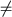

1994
CFT is a new constraint system providing records as logical data structure for constraint (logic) programming. It can be seen as a generalization of the rational tree system employed in Prolog II, where finer-grained constraints are used, and where subtrees are identified by keywords rather than by position.
CFT is defined by a first-order structure consisting of so-called feature trees. Feature trees generalize the ordinary trees corresponding to first-order terms by having their edges labeled with field names called features. The mathematical semantics given by the feature tree structure is complemented with a logical semantics given by five axiom schemes, which we conjecture to comprise a complete axiomatization of the feature tree structure.
We present a decision method for CFT, which decides entailment and disentailment between possibly existentially quantified constraints. Since CFT satisfies the independence property, our decision method can also be employed for checking the satisfiability of conjunctions of positive and negative constraints. This includes quantified negative constraints such as y z(x  f(y,z)).
The paper also presents an idealized abstract machine processing negative and positive constraints incrementally. We argue that an optimized version of the machine can decide satisfiability and entailment in quasi-linear time.
Journal of Logic Programming, n3 v18, 1994